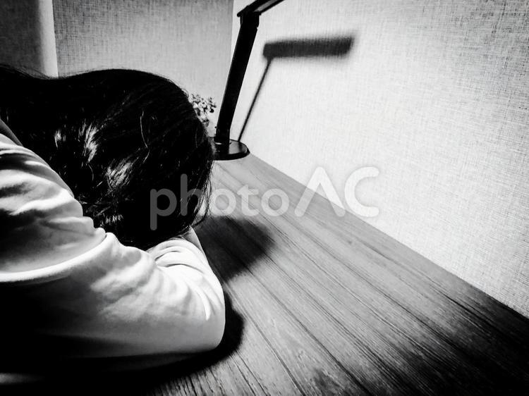
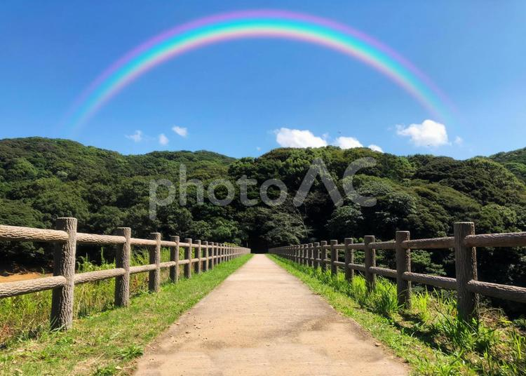

Ⅰ.自己紹介
出身(from)→宮崎
年齢(age)→19歳
職業(occupation)→大学生
趣味(hobby)→ソフトテニス(中高の部活でやってました！)、音楽を聴く
Ⅱ.プログラミングを始めた理由
早速ですが、僕がプログラミング学習を始めた経緯についてお話しさせていただきたいと思います!
Ⅲ.モヤモヤした気持ちで終えた大学入試
僕は、現役で地方国立大の農学部に合格しました。自分は、もともと医療系の学部を目指していましたが、試験の結果が振るわず、悔しい気持ちもありましたが、自分の受かった大学で頑張ろうという気持ちを胸に抱いて僕の大学生活、親元を離れての一人暮らしが始まりました。
Ⅳ.何もできない自分に虚無感を覚える
2020年春いよいよ僕の大学生活が幕を開けました。大学入学後同じ学部でオリエンテーションの時にできた友人や高校時代の友人(同じ高校出身の男子は僕を含め3人しかいませんでした)と大学近くのゲームセンターでコインゲームしたり、鍋パーティーなどをしてそれなりに楽しい大学生活を送っていました。しかし、怠惰な生活を送っている自分に後ろめたさも感じていました。
Ⅴ.大学を休学することを決意する
暑さも体感し始めた6月中旬僕は、後期から休学することを決意しました。僕が休学を決意した大きな理由は、サークル活動も停止し、講義もすべてオンライン、移動の制限など自分の描いていた大学生活とはほど遠い状況におかれ、他のことで有意義な時間を過ごした方がいいと考えたからです。
Ⅵ.前期の授業を終え、帰省する。
8月上旬授業を終え、アパートを引き払い、地元の宮崎に帰省します。休学中に自分のやりたかったことの候補として「留学」などたくさんありましたが、コロナ禍などを踏まえて僕は、再受験することを決意しました。
Ⅶ.始まった予備校生活
8月中旬地元の予備校に入り、再び受験生になりました。久しぶりの高校の内容の学習は忘れている部分が沢山あり、大変でしたが、自分なりに努力をし、昨年より一次試験の点数を約100点上げ、二次試験を受験しました。
Ⅷ.失敗に終わった再受験
2021年3月9日この瞬間満を持して受けた試験の不合格が突きつけられました(後に判明するのですが、0.6点差落ちでした...)。この時僕の中には高3の時さぼった自分への後悔や浪人中も気持ちを緩めてしまったことへの後悔などの気持ちがめぐり、しばらく抜け殻のようになっていました。
Ⅸ.バイト、プログラミングの開始
不合格という現実を突きつけられしばらくの間落ち込んでいましたが、大学でできた友達に電話で不合格を報告し励ましの言葉を受け、気持ちを切り替え、バイトで社会経験をしながら、プログラミングやTOEICの学習をすることを決意しました。
Ⅹ.現在と将来の展望
一時期はTOEICの学習を中心にしており、プログラミング学習から退いていた時期がありましたが、TOEICを終え、5月下旬に再び学習を開始しました。プログラミング学習とバイトの両立は大変ですが、充実した日々を送れています。復学してからは、学校の学習とWEB制作を両立させ、その後の長期休業中にインターンに参加し、経験を積みたいと考えています。
